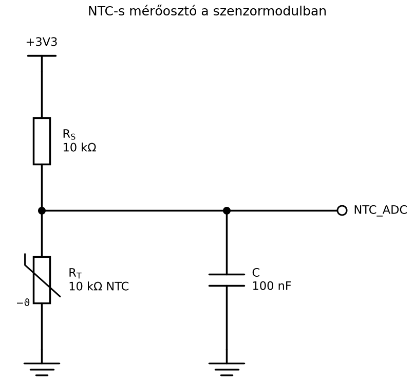
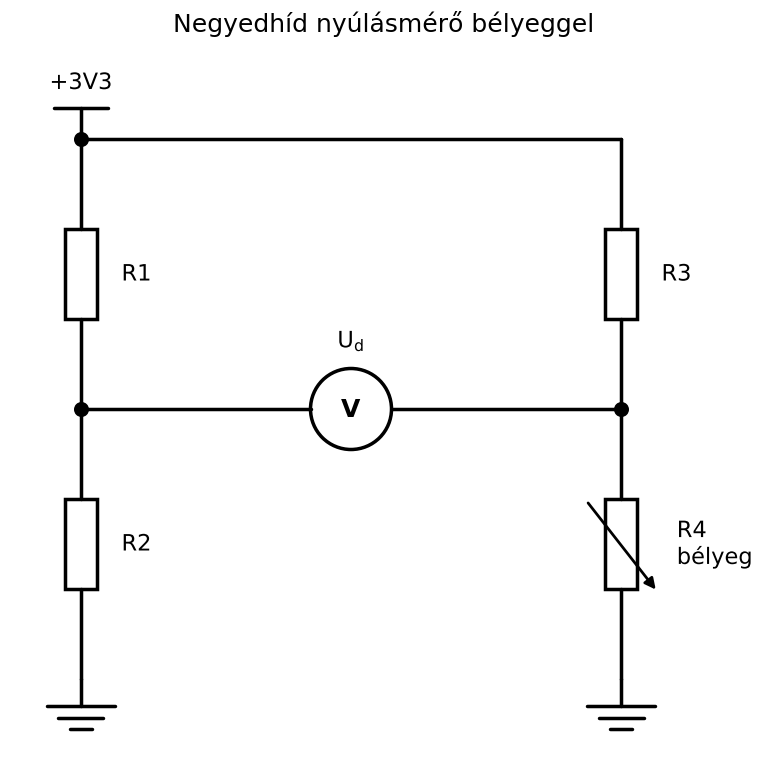
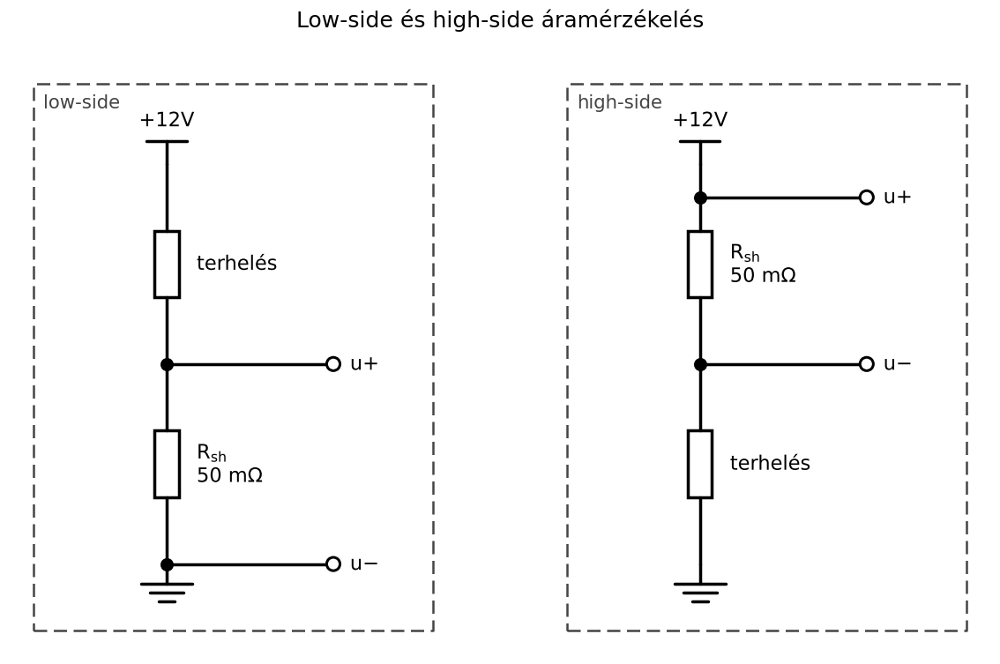
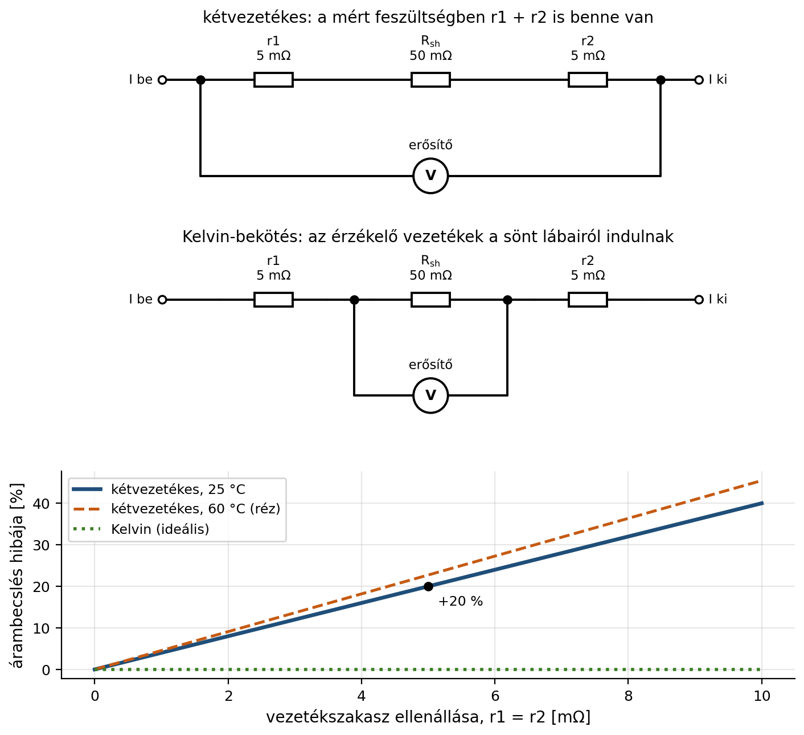
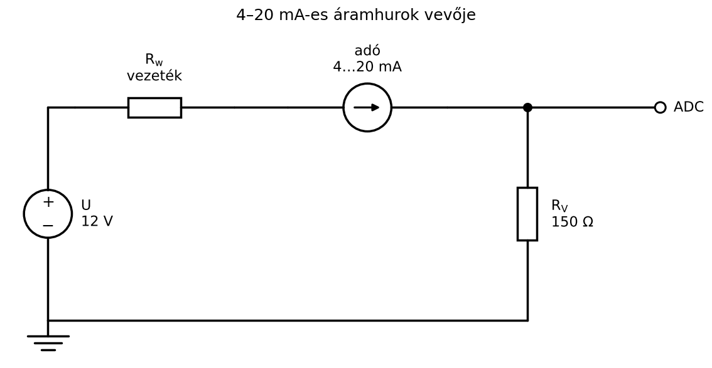

A szenzormodul ADC-je két kódot ad: az NTC csatornán például 940-et, az áramcsatornán 2048-at. A programnak hőmérsékletet és áramerősséget kell mondania, a tervezőnek pedig ennél többet: mennyire bízhatunk az eredményben? Ha a szolenoid árama 2 A, vajon ±10 mA vagy ±100 mA pontossággal tudjuk? Ha a modul 60 °C-on működik, 1 K a hiba, vagy 0,1 K? Ehhez a teljes jelutat (érzékelő → illesztő áramkör → ADC) egyben kell végiggondolni.
Tanulási célok. A fejezet végére meg tudsz tervezni egy NTC-s mérőosztót (soros ellenállás, érzékenység, felbontás °C-ban), áramérzékelő söntet és erősítőt választasz (érték, disszipáció, közös módusú feszültség, Kelvin-bekötés), és hibaköltségvetést készítesz, amely megmutatja a domináns hibaforrást.
Az érzékelő (sensor) egy fizikai mennyiséget elektromos jellemzővé alakít: itt ellenállássá (NTC, platina hőmérő, nyúlásmérő bélyeg) vagy feszültséggé (sönt). A jelút olyan, mint egy tolmácslánc: minden láncszem kicsit torzít, és a végén a torzítások összeadódnak. A hibaköltségvetés azt mondja meg, melyik tolmácsot érdemes lecserélni – a legpontosabb referencia sem segít, ha a sönt 5%-os.

Gondolkodj előre: egy NTC-hez melyik soros ellenállás adja a legnagyobb feszültségváltozást 60 °C körül: a 10 kΩ-os, vagy valami más? Tippelj, mielőtt az ábrát nyitod.
NTC (negative temperature coefficient): hőmérséklettel meredeken csökkenő ellenállású félvezető kerámia. Két modell:
Definíció. B-paraméteres modell:
ahol kelvinben van, a 25 °C-os névleges érték, (K) a meredekséget adja. A mintaérzékelőnél kΩ, K.
A valójában enyhén hőfokfüggő, ezért széles tartományban a Steinhart–Hart-modell pontosabb:
A három együtthatót három mért (vagy táblázati) pontból illesztjük. Harmadik lehetőség: a gyártói táblázat lineáris interpolációval (egyszerű, gyors a mikrovezérlőn).
PTC / platina hőmérő (Pt100): közel lineárisan növő ellenállás, 0 °C-on 100 Ω, kb. 0,385 Ω/K (ellenőrizendő: IEC 60751). Pontos és stabil, de kis jelű: a vezetékellenállás és az önmelegedés számít (3 vagy 4 vezetékes bekötés).
Nyúlásmérő bélyeg (strain gauge): a nyúlás (, relatív hosszváltozás) arányosan változtatja az ellenállást: , ahol a bélyegállandó fémbélyegnél kb. 2 (adatlapfüggő). Ez ezrelékes változás, amelyet Wheatstone-híddal mérünk:

A két osztó különbsége . Egyensúlyban (négy egyforma ellenállás) ; kis változásra
3,3 V-on, 500 µm/m nyúlásnál , mV, kb. egyetlen LSB! Ezért kell műszererősítő (Alapkapcsolások: invertáló, neminvertáló, összegző, különbség- és műszererősítő). A híd ratiometrikus: a tápfeszültség ugyanúgy szorozza a jelet, mint a referenciát.
Az osztó kimenete . A hőmérsékletre vett meredeksége (a B-modellből, ):
Adott -n a -ben és -ben álló rész rögzített, a törtet pedig -vel alakba írhatjuk, amely -nél a legnagyobb (0,25). Tehát egy célhőmérsékleten a legnagyobb érzékenységet az adja. Vigyázz: ez az görbéjének csúcsát nem pontosan -ra teszi (az ábrán a 3 kΩ-os görbe 48 °C körül a legmeredekebb), csak azt mondja, hogy -on semelyik más nem ad többet.
Felbontás ratiometrikus mérésnél: egy LSB-nek megfelelő hőmérsékletlépés .
Önmelegedés. Az NTC-n disszipálódik; ez -val melegíti, ahol a disszipációs állandó (W/K; mintaadat 2 mW/K, a rögzítéstől és a közegtől függ). Kisebb nagyobb áram, nagyobb önmelegedés.
Linearizálás. Az osztó maga is linearizál. A görbe inflexiós pontját (ott a leglineárisabb) a -re az adja; 25 °C-ra 7,04 kΩ. Más út: párhuzamos ellenállás az NTC-vel, vagy (a mai szokás) szoftveres számítás vagy táblázat.
A sönt kis, pontosan ismert ellenállás: , a veszteség . Választási kompromisszum: nagyobb nagyobb jelet ad, de több hőt és feszültségesést okoz.

A sönt választásánál a disszipáció deratingjét is nézd (a modul söntje 1 W-os; 2 A-nél W-ot ad le, 20%).
Kelvin-bekötés (négyvezetékes): a nagyáramú út két vezetéke és a két érzékelő vezeték külön, közvetlenül a sönt lábairól indul. Az érzékelő vezetékeken gyakorlatilag nem folyik áram, ezért nincs rajtuk feszültségesés.

5 mΩ-os vezetékszakaszok a kétvezetékes mérésben 50 mΩ mellé 10 mΩ-ot adnak: +20% hiba, ráadásul a réz 0,39%/K-es hőfoktényezőjével változó. A rajzon ez kényszer: „Kelvin-bekötés a söntön” (Kapcsolási rajz konvenciói és a NYÁK-tervezőnek átadott kényszerek).
Hosszú vezetéken a feszültségjelet a vezetékellenállás és a zaj rontja. Az áramhurokban az adó a mért értéktől függő áramot hajt át a hurkon (4 mA = a tartomány alja, 20 mA = a teteje); soros hurokban az áram mindenütt ugyanaz, akármekkora a vezetékellenállás. A vevő egy ellenálláson alakítja feszültséggé.

150 Ω-mal a jel 0,6–3,0 V; a mérendő arány . A nem nulla alsó érték (élő nulla) miatt a 0 mA egyértelműen vezetékszakadás. A feszültségtartalék (compliance) ellenőrizendő: a táp fedezze a vevő feszültségét, a vezetéket és az adó legkisebb működési feszültségét. Hibaszintek (pl. 3,6 mA alatt „hiba”) az adott rendszer dokumentációjából jönnek (ellenőrizendő: NAMUR NE 43).
Definíció. A hibaköltségvetés (error budget) a jelút összes független hibaforrásának táblázata közös egységben (a mérendő mennyiségben), összegezve legrosszabb esetre (WCA) és négyzetesen (RSS, lásd Mérési hiba, bizonytalanság és jegyzőkönyv).
Lépések:
A legrosszabb eset () garantál, de ritkán valósul meg; az RSS () független, véletlen hibákra reális becslés. A kettő közti döntést a következmény súlyossága adja (derating és tűrés: Derating, tűrésanalízis és megbízhatóság).
A bal oldalon a fehér kitöltésű tételek kalibrálhatók. A jobb oldali RSS-oszlop felosztása a négyzetes részarányt mutatja.
Továbbvitt eredmény. NTC-osztónál a célhőmérsékleten az adja a legnagyobb érzékenységet, a felbontás , az önmelegedés . Söntnél a veszteség, a közös módus és a Kelvin-bekötés dönt. A hibaköltségvetés minden forrást közös egységben, kalibrálhatóság szerint ad össze, és megmutatja a domináns tagot.
1. NTC 60 °C-ra.
E96-os soros ellenállás: kΩ.
| érzékenység 60 °C-on | felbontás | önmelegedés | felbontás −20 °C-on | |
|---|---|---|---|---|
| 10 kΩ | 18,1 mV/K | 0,045 K/LSB | 0,10 K | 0,045 K/LSB |
| 3,01 kΩ | 25,5 mV/K | 0,032 K/LSB | 0,45 K | 0,127 K/LSB |
A felbontás-nyereség kicsi, az önmelegedés viszont négyszeres: a széles tartományú modulban a 10 kΩ jó kompromisszum. 25 °C-on: mV/K, K/LSB, önmelegedés 0,14 K.
2. Sönt. 2 A, 50 mΩ: mV, → 2,0 V, 1 LSB = 0,806 mA, W.
3. Árammérés hibaköltségvetése 2 A-nél (mintaadatok: sönt ±1%, 50 ppm/K; erősítő offset ±0,5 mV, 5 µV/K, erősítéshiba ±0,5%, 25 ppm/K, CMRR 80 dB; referencia a 3V3 sín ±2%, 100 ppm/K; ADC offset 2 LSB, INL 1,5 LSB). Néhány átszámítás:
Az összes tétellel: legrosszabb eset ±112 mA (5,6%), RSS ±49 mA. Egypontos (25 °C-os) kalibrálás után ±31 mA, illetve ±14 mA. Domináns a referencia: cseréje 0,5%-os, 50 ppm/K-esre a legrosszabb esetet 112-ről 78 mA-re csökkenti. Józanész: kis áramnál az offsetjellegű tagok relatíve nagyok.
4. NTC hibája 60 °C-on (R25, B, egyenként ±1%, ADC ±3 LSB; a referencia kiesik): legrosszabb eset ±1,17 K, RSS ±0,62 K, domináns a tűrése (40%). Ehhez jön az önmelegedés (+0,10 K, rendszeres) és a modellhiba.
from elkit import budget as bg
for rs in (10e3, 3.01e3):
s = bg.ntc_sensitivity(60, rs) * 1e3
res = bg.ntc_resolution(60, r_series=rs)
r = bg.ntc_resistance(60)
heat = 3.3 ** 2 * r / (rs + r) ** 2 / 2e-3
print(f"R_S = {rs / 1e3:5.2f} kΩ: S = {s:6.2f} mV/K, {res:.4f} K/LSB, "
f"önmelegedés {heat:.2f} K")
t_tab, r_tab = bg.ntc_table()
coef = bg.steinhart_hart_fit([-20, 25, 85], [74665, 10000, 1451])
for t in (-35, 0, 60):
r = r_tab[list(t_tab).index(t)]
print(f"{t:4d} °C: B-modell hibája {bg.ntc_temperature(r) - t:+.2f} K, "
f"Steinhart–Hart {bg.steinhart_hart_temperature(r, coef) - t:+.2f} K")
f_err, par = bg.ntc_error_model(60.0, adc_error_lsb=3)
print(bg.ErrorBudget.from_params(f_err, par, unit="K").table())R_S = 10.00 kΩ: S = -18.07 mV/K, 0.0446 K/LSB, önmelegedés 0.10 K
R_S = 3.01 kΩ: S = -25.53 mV/K, 0.0316 K/LSB, önmelegedés 0.45 K
-35 °C: B-modell hibája +1.01 K, Steinhart–Hart -0.09 K
0 °C: B-modell hibája +0.34 K, Steinhart–Hart +0.03 K
60 °C: B-modell hibája -0.17 K, Steinhart–Hart -0.06 K
hibaforrás ±határ [K] RSS-rész kalibr.
b_x 0.391 40.3% nem
r25_x 0.323 27.5% nem
rs_x 0.323 27.5% nem
adc_lsb 0.134 4.7% nem
legrosszabb eset 1.17
négyzetes összeg 0.616A paraméternevek: b_x a
,
r25_x az
,
rs_x a soros ellenállás. A három pontra illesztett
Steinhart–Hart-modell a mintatáblázaton jóval pontosabb a B-modellnél.
Az árammérő költségvetés:
b = bg.ErrorBudget("mA")
for name, lim, cal in [
("referencia kezdeti", 40, True), ("sönt tűrése", 20, True),
("erősítéshiba", 10, True), ("offset", 10, True), ("referencia drift", 9, False),
("közös módus", 8, False), ("offset drift", 4.5, False), ("sönt TCR", 4.5, False),
("erősítés drift", 2.25, False), ("ADC offset", 1.61, True), ("ADC INL", 1.21, False),
("sönt önmelegedés", 1.0, False), ("kvantálás", 0.40, False)]:
b.add(name, lim, cal)
print(b.table())
print("domináns:", b.dominant().name, "| kalibrálás után:", b.dominant(True).name)hibaforrás ±határ [mA] RSS-rész kalibr.
referencia kezdeti 40 66.8% igen
sönt tűrése 20 16.7% igen
erősítéshiba 10 4.2% igen
offset 10 4.2% igen
referencia drift 9 3.4% nem
közös módus 8 2.7% nem
offset drift 4.5 0.8% nem
sönt TCR 4.5 0.8% nem
erősítés drift 2.25 0.2% nem
ADC offset 1.61 0.1% igen
ADC INL 1.21 0.1% nem
sönt önmelegedés 1 0.0% nem
kvantálás 0.4 0.0% nem
legrosszabb eset 112
négyzetes összeg 48.9
kalibrálva, legrosszabb 30.9
kalibrálva, négyzetes 13.9
domináns: referencia kezdeti | kalibrálás után: referencia driftA jelút érzékelő, illesztő áramkör és ADC; hibája ezekből adódik össze. Az NTC modellje (pontosabban Steinhart–Hart vagy táblázat); a célhőmérsékleten az a legérzékenyebb, a felbontás , az önmelegedés . A híd kis változást különbségi erősítővel mér. A söntös mérésben a veszteség , a low-side egyszerű, de eltolja a földet, a high-side közös módusú feszültséget lát; Kelvin-bekötés kell. A 4–20 mA-es hurok vezetékfüggetlen és hibajelző. A hibaköltségvetés közös egységben, WCA-val és RSS-sel, kalibrálhatóság szerint összegez; először mindig a domináns tagot javítsd, és kalibrálás után is nézd meg, mi maradt. A szenzormodul árammérésénél ez a referencia. Az NTC-osztó és a söntös mérés tervezését a záróprojektek, a hibaköltségvetést a tűrésanalízis és a mérőlánc-projekt viszi tovább.
1. , Ω → °C.
2. , mV, .
3. A kimenet korlátja: mΩ; a disszipáció: mΩ. E24: 12 mΩ (ha a gyártó sönt értéksorában kapható; különben 10 mΩ). 12 mΩ-mal a veszteség 0,3 W, a kimenet 3,0 V, 1 LSB mA. A sönt teljesítménye legalább 0,5–1 W legyen (derating).
4. Terhelve kΩ Ω, az osztási arány . 1 LSB VIN-re: mV. 12 V-on 2,25 V (16 V-on 3,0 V). Legrosszabb eset: az arány hibája (a két ellenállás ellentétes irányban), plusz 2% referencia, együtt kb. 3,6%, azaz ±0,43 V. A 30 V-os impulzus kb. 5,6–5,7 V-ot adna az ADC-lábra: védelem kell (Szintillesztés, bemenetvédelem és pergésmentesítés).
5. Kód:
bg.analyze(*bg.ntc_error_model(60, adc_error_lsb=3, r_series=rs), n=20000, seed=64),
majd a.mc.quantile([0.025, 0.975]). A két osztó tűrésből
adódó sávja közel azonos (a
,
és
relatív hibája dominál; az ADC-hiba hatása a nagyobb érzékenység miatt
valamivel kisebb), az önmelegedés viszont 0,10 helyett 0,45 K,
rendszeres eltolásként. Hacsak nem kompenzálod, a 10 kΩ a pontosabb
választás.
6. Egy megoldás (kalibrálás után): precíz referencia, 10 ppm/K (9 → 0,9 mA); erősítő 1 µV/K-es drift (4,5 → 0,9 mA) és 100 dB CMRR (8 → 0,8 mA); 25 ppm/K-es sönt (4,5 → 2,3 mA). A többi marad: erősítés drift 2,25, INL 1,2, önmelegedés kb. 0,5, kvantálás 0,4 mA. Összeg: mA – teljesül. Egy szerényebb változat (csak CMRR 100 dB és 50 ppm/K referencia: 31 − 7,2 − 4,5 ≈ 19 mA) is megfelel; a kalibrálás bizonytalanságát még hozzá kell adni.